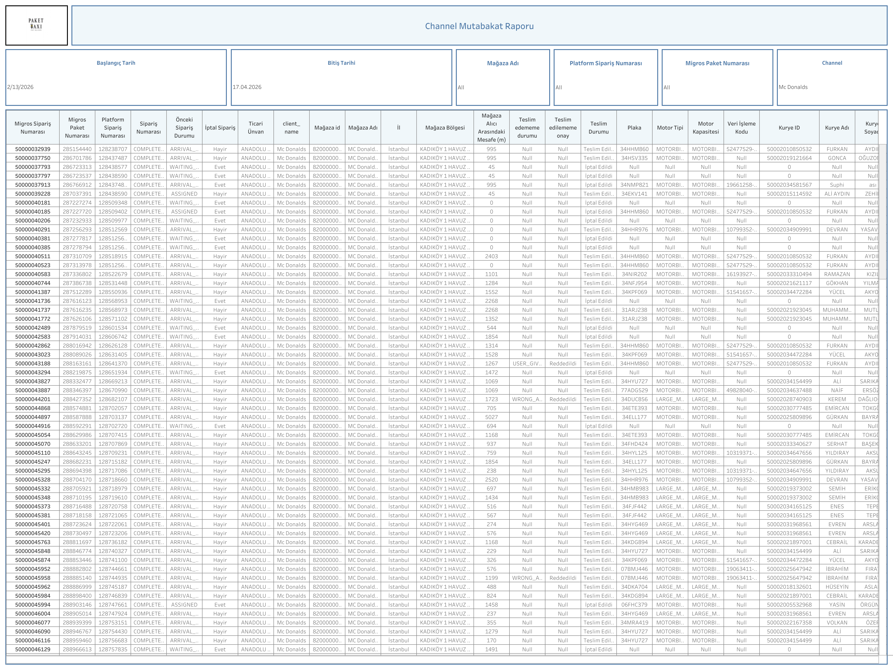

Canlı Rapora Erişin
Güncel mutabakat verilerini Tableau üzerinde interaktif olarak görüntüleyin.
Dashboard Hakkında
Ne Gösterir?
Channel Mutabakat Dashboard, Migros sipariş numaraları ile platform sipariş numaralarını karşılaştırarak kanal bazında mutabakat durumunu sunar. Sipariş teslim durumu, iade ve iptal kayıtları detaylı satır bazında incelenir.
- Sipariş Eşleştirme: Migros Sipariş No, Migros Paket No ve Platform Sipariş No karşılaştırması
- Sipariş Durumu: COMPLETED, WAITING, ASSIGNED ve diğer sipariş statüleri
- Teslim Bilgileri: Teslim durumu, teslim edilemeyen neden ve teslim edememe durumu
- Mağaza ve Bölge Bilgisi: Mağaza adı, mağaza ID, il ve mağaza bölgesi
- Plaka ve Motor Tipi: Siparişi teslim eden kurye aracına ait plaka ve motor tipi
- Filtreler: Başlangıç tarihi, bitiş tarihi, mağaza adı, platform sipariş numarası, Migros paket numarası ve channel
Dashboard Önizleme

Channel Mutabakat Dashboard — Tableau